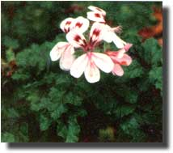
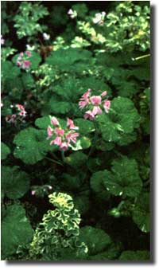

Grow S centsational Geraniums
Here's one way to bring variety, color, and a whole spectrum of fragrances into your life.
Johanna Linch
July/August 1984
Apricot, apple, lemon, mint, strawberry yum! It sounds like a list of delicious flavorings, jellies, or fancy soaps, doesn't it? However, these five names represent only a fraction of the wonderful pelargoniums-better known as scented geraniums-that are available to the collector of charming and unusual flowering plants.
Despite their common name, scented geraniums are unrelated to the true geranium (Geranium maculatum), or cranesbill, whose lovely rose pink flowers are often found growing wild in temperate woodlands. They are, rather, members of the Pelargonium genus, which includes the beloved garden geranium that's cultivated in window boxes and ornamental gardens throughout the country. Semiwoody and tender, these perennials are native to the Cape of Good Hope in South Africa and, if left outdoors, rarely survive the rigorous winters typical of most of the United States.
While the garden geranium is well-known for its bright flowers and occasionally variegated leaves, scented geraniums are noted for their aromatic foliage that-after centuries of hybridization-comes in a wide assortment of fragrances. The leaves of different varieties also display a range of shapes, sizes, and colors ... from the tiny, bright green, crinkled, lemon-scented leaves of Pelargonium crispum types to the large, grayish green, velvety, peppermint-scented leaves of Pelargonium tomentosum. The flowers are less showy, on the whole, than the blooms of the familiar ornamental, but they're attractive (if rather small) and may be white, pink, red, lavender, or-in at least one case-yellow. Versatile as well as varied, scented geraniums can be tucked into the garden between the herbs and flowers, grown in hanging baskets, trained as standards (treelike forms), or simply planted in pretty pots to grace a sunny kitchen window or-during the warmer months-to occupy a spot near an entryway, inviting the touch of passersby.
SOME COMMON S cents
Fragrant pelargoniums are divided into six or seven major categories (depending on which authority you follow) according to their predominant s cents and growth habits. Here are the seven groups and some of their bestknown varieties:
Rose: Old-fashioned Rose, Dr. Livingston, Logee's Snowflake, Attar of Roses, and Grey Lady Plymouth.
Lemon: Prince Rupert, Lemon-scented, Mable Grey, Lemon Balm, and Rose Bengal.
Mint: Peppermint, Joy Lucille, Pungent Peppermint, Crowfoot, and Chocolate Mint.
Fruit and Nut: Apple, Strawberry, Orange, Apricot, Filbert, and Pretty Polly.
Spice: Nutmeg, Ginger, Old Spice, and Cinnamon.
Pungent: Beauty, Clorinda, Mrs. Taylor, Pine-scented, Old Scarlet Unique, and Southernwood.
Oak-Leaved: Fair Ellen, Sharptooth Oak, Staghorn Oak, Pheasant's Foot, and Village Hill Oak.
Altogether there are some 80 varieties available, yet at one time there were more than 250. The original herbs were introduced to Europe from South Africa in the early 1600's and attracted so much attention that by 1652 the Dutch East India Company had established a brisk trade in the plants. Specimens were sent to Holland, where they were multiplied and hybridized. By the 1700's they were being grown in quantity for the perfume industry, and with the discovery that the Pelargonium capitatum-known as Attar of Roses-could serve as a substitute or adulterant for the costly true rose attar, extensive plantations of scented geraniums were established by British landowners in Kenya. (This will give some idea of just how extensive these plantations needed to be: It takes one ton of green material to produce a mere two and a half pounds of essence by the process of distillation!) In the 1800's the Victorians cultivated them widely as ornamentals and used them in a number of folk remedies. Compresses or head baths of scented geranium vinegar, for example, were reputed to cure headaches ... a remedy that doesn't seem to have survived the Victorian era.
With the advent of World War I and its concomitant fuel shortages, greenhouse production of ornamental plants was banned. As a result, propagation of scented geraniums fell into a decline, and many hybrids were lost. It wasn't until after World War II that interest in them was rekindled and it's going strong today.
S centsIBLE USES
Although fragrant pelargoniums are grown in a garden setting primarily for their direct appeal to sight, smell, and touch, they have some practical uses as well. The leaves, which retain their fragrance for years, can be dried and crumbled, then sewn into sachets or stirred into potpourri. Mesh bags containing the newly picked herbs can be steeped in bathwater to perfume it, while leaves of the lemon-scented varieties, in particular, are a pleasant addition to finger bowls. (At one time bunches of the fresh greens were even strewn on earthen or flagstone floors where-serving in much the same capacity as today's room fresheners-they gave out sweet odors when trod upon.)
Geraniums can be used in the kitchen, too, for jams and jellies, cakes, flavored sugars and syrups, puddings, custards, and beverages such as tea or wine. Add one or two leaves of rose geranium to hot apple jelly to give the spread a delectable extra hint of flavor. For a soft rose taste that's both unusual and elegant, lay several of these leaves in the bottom of a greased and floured loaf pan when you're baking a white or pound cake. To make this flavor stronger, add one or two drops of rose oil or rosewater to the batter.
ESCENTIAL FACTS
Since the soil in South Africa is light and has excellent drainage, it would be best to duplicate this medium if you intend to grow scented geraniums. Different authorities have different ideas, though, as to precisely what constitutes the best mixture for the potting soil. Some suggest a pH of 6 to 7 (very slightly acid, or neutral), with peat moss, sand, or perlite added to provide balance and good drainage. Author/gardener Helen Van Pelt Wilson feels that a blend of half leaf mold and half peat moss works quite well . . . or a mixture of 3 parts loam, I part coarse sand, and I part leaf mold. All authorities seem to agree that scented geraniums like moderate temperatures (55° to 70°F is ideal) and plenty of light, although heavily blossoming ones like Clorinda and Mrs. Taylor need direct sunlight. (Actually, like people, scented geraniums can get sunburned, so be sure to shade them a bit during the hot summer months if they're in a window with southern or western exposure.) Like the garden geraniums, the fragrant varieties do best when slightly pot-bound. Water them only when the soil has dried out somewhat (it should feel dry to the touch, but do not let the plant roots dehydrate), then soak them thoroughly and allow them to drain completely.
In their native land, these aromatic beauties can grow ten feet high or so outdoors. Although they can winter over in some sections of our country, most have to spend at least the colder months indoors (where they need to be pinched back lest they outgrow available space). Indoors or out, the plants tend to get woody with age, producing fewer new shoots and leaves. However, one can take cuttings from mature plants in springtime, root them and grow them over the summer, then discard the old plants and keep the rooted cuttings for next year's garden.
S centsIBLE PROPAGATION
Although you can start fragrant pelargoniums from seed, it's a difficult task; further-more, because scented geraniums have been hybridized so much, their seeds don't always produce true to type. A better method of propagation is by rooting cuttings. These should be three or four inches-or as much as four leaf nodes-long, taken from the main stem, and either cut with a very sharp knife or snapped off cleanly. All leaves should then be removed from the bottom quarter of the stem. Scented geranium cuttings are more susceptible to rot than those from the familiar garden type, so the rooting medium should be very well drained, and you should water conservatively. Some experts advise using a mixture of sand and perlite; some prefer moist sand. Chuck Heidgen of Shady Hill Gardens recommends that cuttings be taken in the evening, swished in a solution of 1 or 2 tablespoons of ordinary bleach and 3 or 4 drops of dish detergent to half a gallon of water, and allowed to dry overnight. By morning the clipped ends will have sealed over slightly. The cuttings should then be put into peat pots (Chuck uses Jiffy-7 pots at Shady Hill) kept just moist, not wet. For best results, Heidgen places the peat pots on a cake rack that's set into a pan with some water in the bottom. This provides humidity while keeping the pots out of direct contact with the water.
Once the cuttings are rooted, you can transplant them into a standard growing medium in 4" pots and set them out in the garden (if there's no danger of frost). Repot the plants when their roots fill the containers, or put them directly into the ground. A handful of bonemeal or compost in the planting hole will help the young geraniums develop strong roots and stems. Don't add a nitrogen fertilizer unless it's absolutely necessary: Too much nitrogen will encourage excessive, weak growth and a corresponding loss of fragrance.
AROMATIC CHARMS
There's something very special about plants with aromatic foliage ... they have a kind of unexpected and delightful allure. When the plants also have charming flowers, a great assortment of textures and shapes, and an array of fragrances that duplicate some of our favorite flavors and perfumes, most people would agree that they're nothing short of s centsational!
 |
 |
 |